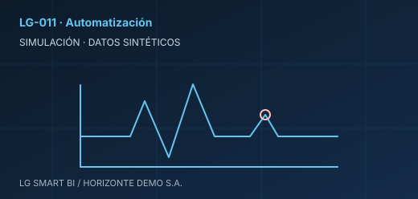

Monitoreo de automatizaciones
Analiza ejecuciones, duraciones, fallos, reintentos y cumplimiento de SLA con filtros y exportación.
Tablero funcional sobre historial sintético
Problema empresarial
Sin observabilidad es difícil distinguir una ejecución correcta de una fallida o incompleta.
Solución técnica
Agregación real de un historial determinista de 30 ejecuciones, con filtros por proceso, estado y fechas, SLA configurable y detalle de intentos.
Implementación independiente de demostración. La experiencia y el enfoque técnico se presentan sin reutilizar código o datos de clientes.
Arquitectura
Demostración funcional — entorno ficticio
Empresa ficticia: DemoComercial S.A. · Moneda: guaraníes (PYG), sin decimales. Todos los nombres, referencias e importes son sintéticos. Las operaciones ocurren en el navegador y no acceden a infraestructura empresarial.
Cargando demostración local…
¿Necesitás una solución similar?
Podemos diseñar una implementación adaptada a las fuentes, procesos y controles de tu empresa.
Consultar por correo Otras formas de contacto